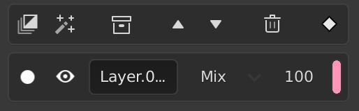
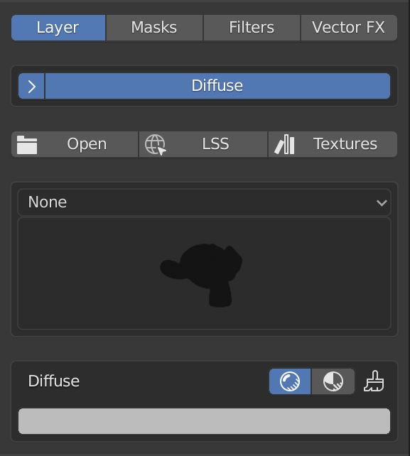

Layer Operators

Here you have the different options to add and manipulate layers.
The first option adds a layer. The second adds a filter layer.
The middle option adds a group layer.
With the two arrows you can move the selected layer up or down. The last option deletes the layer.
The final icon is the indicator for the Atomic Datamanager Addon.
Layer Stack
The options shown in a layer depend on the selected channel. The blending mode only exists for channels apart from the Layer channel.
You can change the visibility, name, blending mode, opacity and the tag color of the layer and its channels.
Layer Settings

Here you have the settings for the currently selected layer. On the top of this panel you can switch between the different settings.
The next option is a list of the channels that are active for this layer. You can expand the dropdown to enable or disable channels.
Below you have a button 'Open' which opens a file browser. Here you can select textures which will get added to their corresponding channels. The LSS Button can be used to import textures from an URL. The 'Textures' Button opens a thumbnail preview which shows the textures from the paths you can specify in the addon preferences.
Underneath the texture buttons you have a panel to select a layer material. You can add custom layer materials in the preferences. Once you've selected a layer material, you can expand the box to change its settings. The button on the right of the node material enables all channels that can make use of the selected material.
Each channel has buttons to switch between the channels modes. The first option is a simple value. The second option allows you to select a texture for that channel. When you have a layer material selected, the channels that can make use of that material will have a third option which uses the material. The final button is to start painting on the selected texture. If there's no texture selected it will create one.